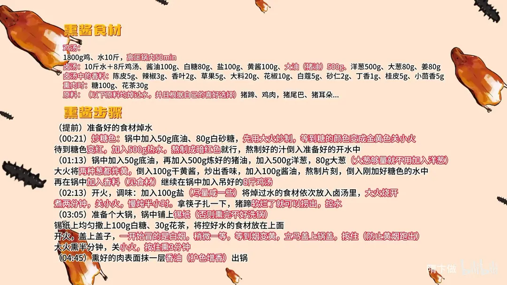

熏酱猪蹄
隋卞一做。猪蹄先焯水，用糖色、干黄酱、猪油与十余味香料吊出的卤汤卤到软烂，再以白糖、花茶在锡纸上干熏。卤汤按 10 斤水配 8 斤鸡汤，盐下到 100g，熏时见黄烟立刻盖严。
原视频：https://www.bilibili.com/video/BV13DxMeAEjB
食材
猪蹄、大葱、姜 等 33 样
| 类别 | 用料 | 用量 |
|---|---|---|
| 主料 | 猪蹄（也可用鸡肉、鸡尾、猪耳朵） | 适量 |
| 吊鸡汤 | 鸡 | 1800g |
| 吊鸡汤 | 水 | 10 斤 |
| 卤汤 | 水 | 10 斤 |
| 卤汤 | 吊好的鸡汤 | 8 斤 |
| 卤汤 | 酱油 | 100g |
| 卤汤 | 白糖 | 80g |
| 卤汤 | 黄酱（干黄酱） | 100g |
| 卤汤 | 盐 | 100g |
| 卤汤 | 大油（猪油） | 500g |
| 卤汤 | 洋葱 | 500g |
| 卤汤 | 大葱 | 80g |
| 卤汤 | 姜 | 80g |
| 香料 | 陈皮 | 5g |
| 香料 | 辣椒 | 3g |
| 香料 | 香叶 | 2g |
| 香料 | 草果 | 5g |
| 香料 | 大料 | 20g |
| 香料 | 花椒 | 10g |
| 香料 | 白蔻 | 5g |
| 香料 | 砂仁 | 2g |
| 香料 | 丁香 | 1g |
| 香料 | 桂皮 | 5g |
| 香料 | 小茴香 | 5g |
| 炒糖色 | 底油 | 50g |
| 炒糖色 | 白砂糖 | 80g |
| 炒糖色 | 热水 | 500g |
| 炒卤 | 底油 | 50g |
| 炒卤 | 炼好的猪油 | 500g |
| 调味 | 盐 | 100g |
| 熏制 | 白糖 | 100g |
| 熏制 | 花茶 | 30g |
| 收尾 | 香油 | 适量 |
步骤
- 备料吊汤：1800g 鸡加 10 斤水，高压锅煮 50 分钟，取 8 斤鸡汤备用；猪蹄等要卤的原料提前焯水、控干。
- 炒糖色：锅中加 50g 底油、80g 白砂糖，先用大火炒，糖色变金黄后关小火，等颜色变红时加入 500g 热水，熬成暗红色，倒入准备好的开水中。
- 炒卤料：锅中加 50g 底油，再加入 500g 炼好的猪油，下 500g 洋葱、80g 大葱（大葱量够就不用加洋葱），大火把两种葱都煸黄；倒入 100g 干黄酱炒出香味，加 100g 酱油熬片刻，冲入刚对好糖色的水中。
- 调卤汤：锅中加入香料（见食材表），再倒入 8 斤吊好的鸡汤，煮开成卤汤。
- 卤制：加 100g 盐调味（尽量咸一些），把焯过水的食材依次放入卤汤，大火烧开煮 2 分钟，关小火慢炖半小时；筷子能扎透、猪蹄软烂即可捞出。
- 备熏锅：找一口大锅，锅底铺上锡纸（否则熏完不好洗锅），锡纸上均匀撒 100g 白糖、30g 花茶，把控好水的食材摆上去。
- 熏制：开火盖上盖子，一开始冒白烟，稍等片刻，等烟变黄立刻盖严按住（防止黄烟跑出），大火熏半分钟，再关小火按住熏 5 分钟。
- 收尾：熏好的肉表面抹一层香油，护色增香，出锅。
小贴士
- 卤汤要按 10 斤水加 8 斤鸡汤来配，盐下到 100g 偏咸，是为了卤得透、也压得住后面的熏味。
- 要卤的原料都先焯过水再下卤汤，卤汤更清爽，成品也不腥。
讲解要点
难度：★★★★☆（难点是炒糖色、卤汤配比和熏制时看烟色）
为什么这么做
- 糖色炒到金黄转红、这时加热水：糖高温焦化才出红色和焦香；加热水是让糖色立刻化开、不结块，也不至于炸锅。
- 底油之外再加炼好的猪油：猪油是香味的载体，卤汤表面挂住一层油，酱香和香料才溶得进去、附得上肉。
- 洋葱、大葱、姜炸到发黄，再下干黄酱炒香、酱油进油里炸一下：葱姜的甜香先炼进油，酱的发酵香和酱油的酱香都要过油才出得来，直接倒进汤里只剩咸。
- 卤汤里兑鸡汤：光用水卤出来的汤薄，鸡汤给底味的厚度；饭店那口大锅天天续料，越卤越香也是这个道理。
- 盐要下到偏咸：卤汤咸度不够，肉里面就没味，后面还有熏味要压。
- 大火烧开煮两分钟上色，再转小火慢炖：大火让表面先收紧、定住色，小火才让味道慢慢渗到骨头边。
- 趁热熏、见黄烟立刻盖严，出锅抹香油：热肉表面才上得住色；烟由白转黄那一瞬香气最足，跑了就只剩苦烟味；香油隔绝空气，护色也增香。
容易翻车
- 糖色炒过头，发黑发苦，整锅卤汤都跟着苦。
- 糖色里加冷水，容易炸锅、糖色结成块。
- 卤汤盐不够，切开里面没味，只剩表面一层香。
- 肉凉了再熏，上不了色。
- 锅盖没按严或者熏得太久，只剩焦苦味，吃不出茶香。
- 熏的时间按颜色走：卡片写大火半分钟后小火 5 分钟，视频口述为小火再熏 3 分钟，见黄烟盖严、上色够了就停，宁可短一点也别熏苦。
热评补充
- 有人实操提醒：锅底铺锡纸建议铺双层，单层有概率会漏，漏了那口锅刷起来特别费劲。
原片尾卡

原片文案
AI 字幕校准稿
现在天气凉了，可以养秋膘了。小李前两天跟我说想吃猪蹄儿，来吧，熏酱猪蹄儿。不光是猪蹄，还给你准备了一只鸡、猪尾巴和猪耳朵。这么横？那可不，来吧。
开始，咱们锅里边加上底油，加入白砂糖，炒糖色。一开始是大火，看这个糖变金黄的时候就关小火；这颜色可以了，加热水。炒好糖色，看这个色，把它倒到咱们准备好的开水里边。
锅里边放底油，砂锅准备点油，这是早上起来我现炼的猪油。洋葱、姜跟大葱——为什么我要用两种葱呢？因为我家没有大葱了。大火把这个葱姜给它炸黄，这个葱已经炸黄了，准备点黄酱倒里炒一炒，这是干黄酱，炒出香味，然后里边加酱油；酱油搁油里面一炸，它也出香味。好了，倒到水里边。
这里边是加点鸡汤。你看刚才我加的那个鸡汤、猪油，其实都是为了增加这个汤的香。你们老看我探店就知道了，饭店都会有一个大锅，里边每天酱的量都够，酱出来就非常香。开火调一个味，调味里面加盐，搅一搅，尝一尝味——不够咸，再来一勺。
给汤熬就行。我们把焯过水的原料放到这个卤汤里面：鸡、猪尾巴、猪蹄儿、猪耳朵，满满一大锅。大火烧开，煮两分钟，上上色就关小火慢炖一个半小时。时间到了，拿筷子扎一扎，猪蹄都软烂了，可以了，捞了。
咱们准备一个锅，锅底下放一张锡纸——为什么放锡纸呢？熏完之后这底可不好刷。底下放上白糖，均匀地撒一下；放好白糖之后，上面放一层茶叶，茶叶也是增香，什么茶叶都行，最好是茉莉花茶。把这个肉直接放到锅里边，这一定是趁热熏，凉了熏它就不好上色。
点火，把盖盖上。开始冒烟了，一开始冒的呀有一点点泛白，稍微一等，仔细看这烟色，得看这烟变黄的一瞬间就把盖盖好，拿手要按紧了，别让那烟儿跑出来。大火半分钟之后就关小火，小火按住再熏三分钟。
熏好的肉呢，表面要抹上一层香油，防止它氧化，起到一个护色的作用，也增香。好了，我们把它取出来。
够咸够呛，能吃出茶香味来吧？底料绝对是够的。茶香味，尤其是咱们还用的是茉莉花，和糖——那个茉莉花香就像是一阵烟，进嘴冲到你的鼻腔，进入到你的肺，整个人全都是肉香和茉莉花香。其他茶叶就没有这么浓的香气了；香味过去以后，肉本身那种油脂的香和卤肉香料的香就出来了，是好吃的。
这个菜其实在家做也好做，我们会把卤料的配比给放到片尾。这个卤汤调完之后您可以反复地用；做卤汤这个事真的是家家都不一样，隋老师做的这属于大众版本，在家试一下吧。